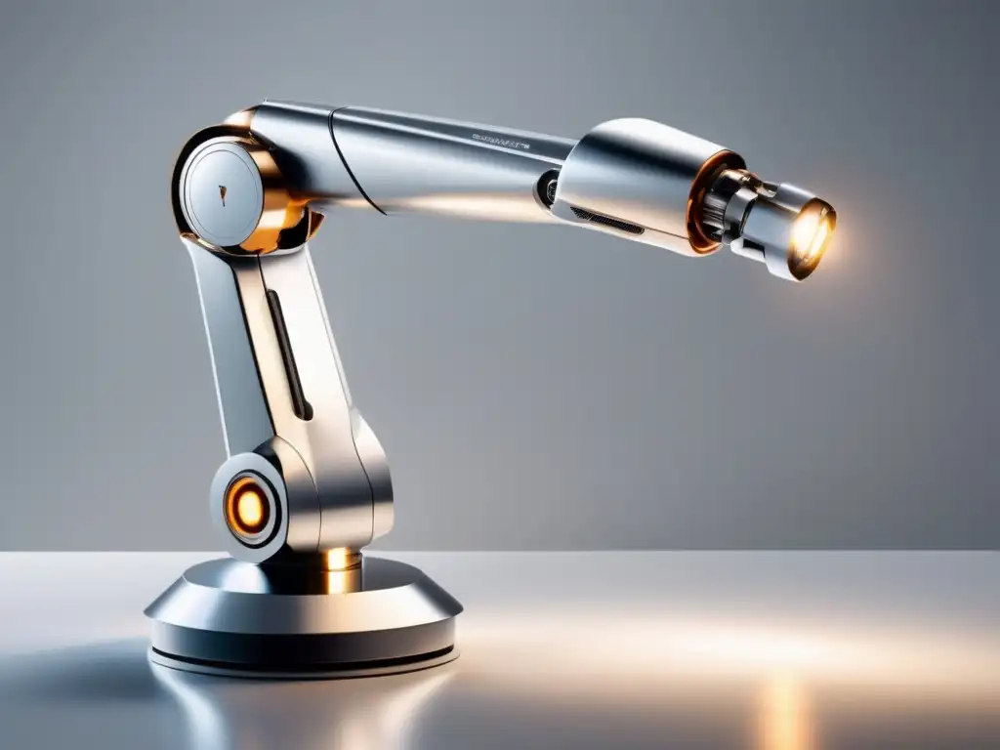

Conceito
O robô polar, ou esférico, é uma das configurações mais antigas da robótica industrial. Ele combina duas juntas rotativas (uma na base e outra no ombro) com uma junta linear que estende ou recolhe o braço, formando um sistema de coordenadas polares (esféricas) que resulta em um grande volume de trabalho.

Princípio de funcionamento
A junta da base gira o braço horizontalmente, a junta do ombro inclina o braço verticalmente, e um atuador linear (telescópico) estende o braço radialmente. Juntas essas três movimentações, o efetuador final alcança pontos distribuídos em um volume esférico ao redor da base do robô.
Principais características técnicas
| Graus de liberdade | 3 (2 rotações + 1 translação) |
|---|---|
| Tipo de movimento | Rotativo na base e ombro, linear no braço |
| Precisão | Média |
| Velocidade | Média |
| Capacidade de carga | Média a alta |
| Área de trabalho | Formato esférico |
Aplicações industriais
- Manuseio de materiais pesados;
- Operações de solda em pontos distantes da base;
- Carregamento de máquinas industriais;
- Movimentação de peças em fundições e forjarias;
- Aplicações em ambientes com grande alcance necessário.
Integração com automação e IoT
Embora seja uma configuração mais tradicional, robôs polares modernos podem receber retrofit com sensores de torque e encoders conectados a gateways IoT, permitindo que fábricas mais antigas integrem esses equipamentos a sistemas digitais de monitoramento sem substituir toda a estrutura mecânica.